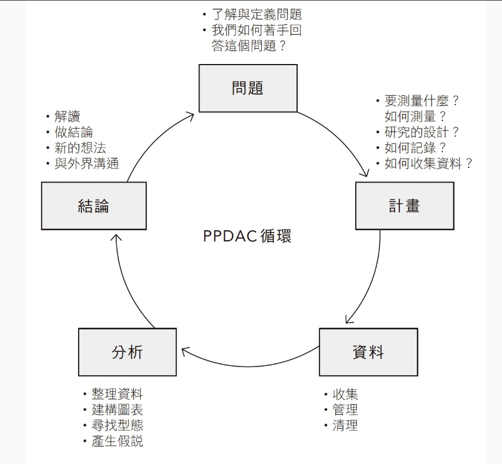
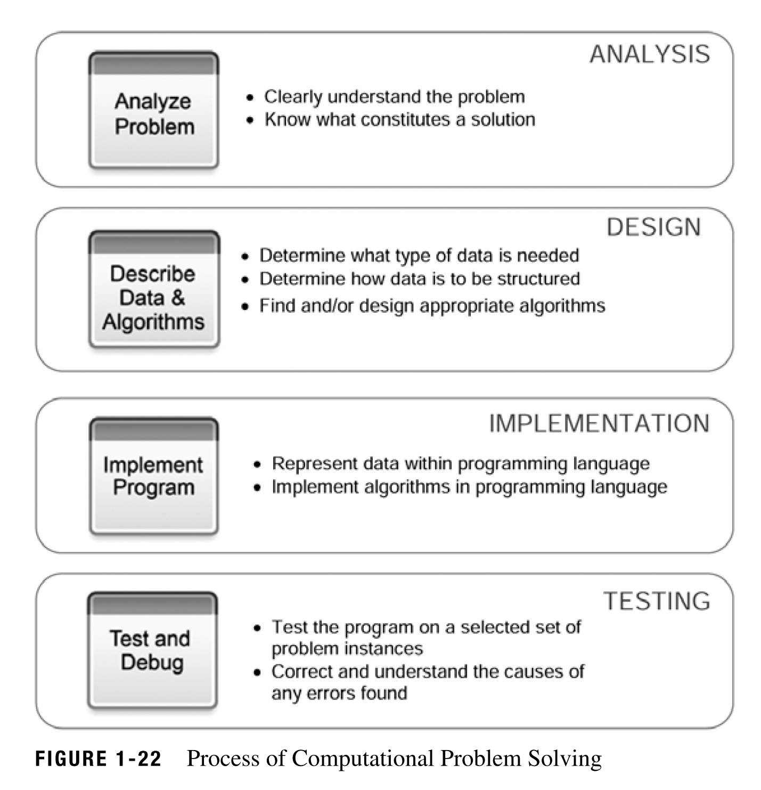
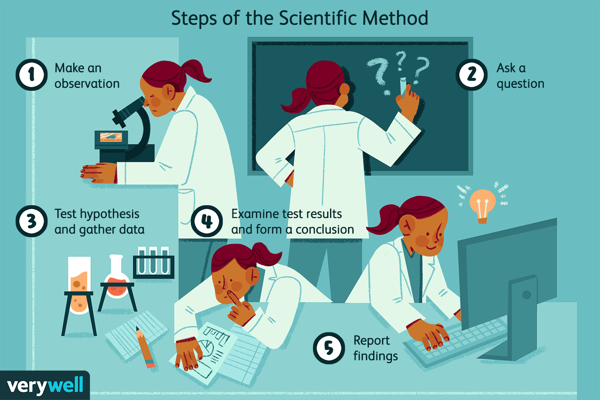

方法工具
做數據分析要瞭解「PPDAC問題解決循環」的架構，即「問題─計畫─資料─分析─結論及溝通」。先從定義問題開始，再制定計畫，包括要測量什麼、如何測量，以及收集資料，然後根據計畫展開統計分析，最後決定適當的結論，並清晰準確地溝通給外界知道。

數據分析的流程，從取得原始資料開始，然後是資料清理與轉置，整理出針對研究問題進行分析所需要的資料集。再根據計畫展開統計分析，除了將資料視覺化之外，還要建立實證模型，以得到適當的結論，最後清晰準確的溝通給外界知道。在大數據的風潮下，資料來源多元，前半部資料整理的基本功日益重要，後半部統計分析、結果呈現與溝通的概念備受重視，也與上面的PPDAC架構後半部完全相符。

在資料日益量大(volume)、即時(velocity)、多元(variety)，並強調真實性(veracity)的「大快雜疑」4V風潮下，透過免費、好用、功能強大的程式語言進行數據分析，以提升工作效率，應該是不可避免的趨勢。「用電腦解決問題」是電腦科學領域的終極目標，想要學習用R、Python或任何統計軟體來做資料分析的人，得先瞭解「用電腦解決問題」的步驟，分析(analysis)、設計(design)、執行(implementation)與測試(testing)。同時，明瞭前兩步驟的分析與設計就是指「運算思維與程式設計」，是解決問題的關鍵；後兩步驟的設計與執行是指「撰寫程式碼與操作軟體」，應該算是細節，有著先後順序與主從關係的差異。也就是瞭解問題，知道一步步解決問題的方法是什麼之後，才會有後半部用電腦，撰寫程式碼、除錯修正的機會。當你不知道問題是什麼、要如何解決的時候，不可能因為用電腦就可以瞎搞出答案。然而，成就一個美好的計畫，對付細節上的魔鬼，也就是花在電腦與程式上的時間與心力，可能是難以計數。

上面三個圖形所提供的數據分析觀念、架構與步驟，目前在教學被強調的是數據分析的執行（實做）部分，也就是學習統計方法、用手算或電腦算出答案。事實上，在解決問題的過程中，經常忽視訓練學生思考（計畫）和溝通（報告）能力的重要性。實踐這種教學方式需要真實世界的示例與資料為素材，才能讓學生進一步思考，要如何瞭解當前的商業與社會問題，怎樣才能透過數據搜集與分析，正確地應用統計方法與撰寫電腦程式，找出解決實際問題答案的實例，並養成與人溝通分析結果的經驗。

＝> 思考(計畫, plan)、執行(實做, do)、溝通(報告, report)
每一次分析都從針對某項商業決策與社會爭議的明確問題開始，應用專業知識與普通常識決定要如何蒐集並分析真實世界的資料來解決問題（思考、計劃）；然後使用電腦來整理與檢視所需的資料，並進行資料視覺化與建模分析（執行、實做）；最終以證據為基礎做決策(evidence-based decision)，提出總結結果與研究限制(溝通、報告)。
- 運算思維與程式設計：Python 入門
- 資料科學概論：用Base R學統計
- 資料科學應用：用Tidyverse R分析真實世界的問題
- 個體經濟學：廠商決策與產業分析，以及賽局理論和資訊經濟